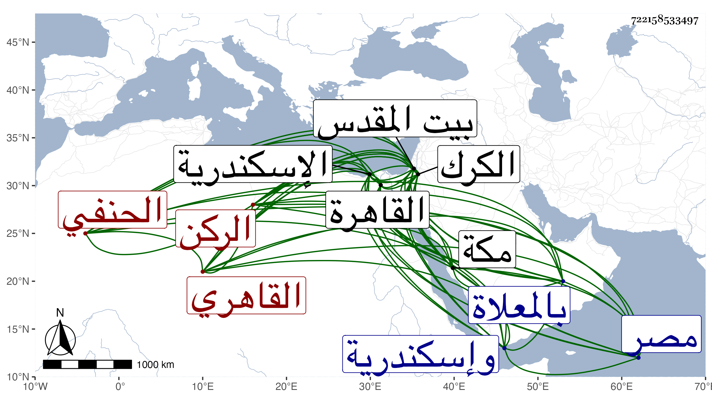

0902Sakhawi.DawLamic.ITO20230111-ara1.EIS1600.722158533497
Biography ID: 722158533497
358
عمر بن قديد بالقاف مكبر الركن أبو حفص بن الأمير سيف الدين القلمطائي بفتح القاف واللام وسكون الميم القاهري الحنفي ويعرف بابن قديد ولد تقريبا سنة خمس وثمانين وسبعمائة بالقاهرة ونشأ بها في غاية الرفاهية والحشمة تحت كنف أبيه وكان من كبار الأمراء ولي نيابة الكرك واسكندرية وعمل لالة الأشرف شعبان بحيث كان هو المسمى لصاحب الترجمة وغير ذلك ومع هذا كله فلم يكن يمانع له عن الاشتغال بل هانت عليه خشونة العيش فحفظ القرآن وتلا به لأبي عمرو وعلى التقي الحلاوي وحفظ غيره من الكتب العلمية وعرض بعضها على الصدر المناوي وأجازه والشمس السيوطي وأخذ الفقه عن السراج قاري الهداية والبدر الأقصرائي ، ولازم العز بن جماعة أكثر من عشرين سنة حتى أخذ عنه غالب العلوم التي كان يقرئها كالمنطق والحكمة والأصلين والجدل والمعاني والبيان والنحو وغيرها وأكثر ذلك بقراءته ، وكذا أخذ عن البساطي وبحث في العروض وغيره على السيوطي المشار إليه وحضر دروس الشهاب بن الهائم حين زار بيت المقدس ولما قدم العلاء البخاري قرأ عليه قطعة من الهداية وأخذ عن سعد الدين الخادم ، وحج مرارا أولها في أوائل القرن وجاور أكثر من مرة ودخل مع أبيه الكرك وإسكندرية وتقدم في الفنون وفاق في النحو والصرف بحيث قيل أنه كان أنحى علماء مصر ، وكان علامة خيرا متعبدا منقطعا عن الناس خصوصا الاتراك مع علو رتبته عندهم متواضعا مع الفقراء بشوشا عاقلا ساكنا طارحا للتكلف في مركبه وملبسه وسائر أحواله على طريقة السلف متزييا بزي أبناء الجند في عمامته وملبسه يركب الحمار بل يمشي في الغالب ، معتدل القد مستدير اللحية أبيضها زائد الخفر والوقار ، انتفع به الفضلاء واشتهر اسمه ، ولم يزل على أمثل حال وأقوم اعتدال إلى أن حج في سنة خمس وخمسين وجاور وأقرأ الطلبة هناك أيضا ثم أدركه أجله فمات في ظهر يوم الاثنين سابع عشري رمضان سنة ست وخمسين بمكة عن ثمان وستين سنة وصلى عليه بعد صلاة العصر عند باب الكعبة ودفن بالمعلاة وكانت جنازته حافلة وتأسف الناس على فقده فقل من كان في وقتنا من أئمة الحنفية من اجتمع فيه من العلم والزهد واتباع السلف ما اجتمع فيه رحمه الله وإيانا .
